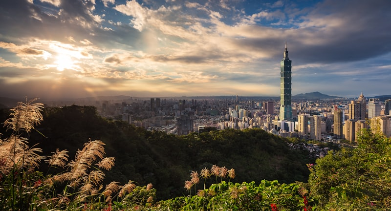
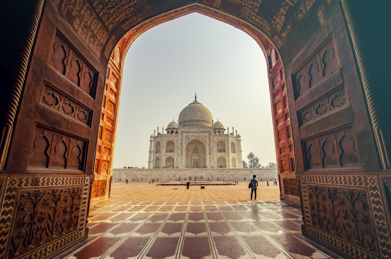

Traditional Arts & Crafts

Calligraphy (书法)
The art of beautiful writing, considered the supreme visual art in Chinese culture. Take a beginner's workshop in Beijing or Hangzhou — you'll learn basic brush strokes and create your own scroll to take home. Many studios offer English or Japanese instruction.
Tea Ceremony (茶道)
While Japan refined the tea ceremony into chanoyu, the Chinese gongfu tea tradition offers a different but equally profound experience. Visit Hangzhou's Longjing village for the authentic Dragon Well tea ceremony, or explore Chengdu's bamboo tea houses for a more casual, social experience.
Beijing Opera (京剧)
China's national art form combines singing, acting, acrobatics, and elaborate costumes. Even if you don't understand the language, the visual spectacle is mesmerizing. The Liyuan Theatre offers performances with English subtitles and shorter programs designed for visitors.

Silk & Embroidery
Chinese silk is legendary. Visit Suzhou's silk workshops to see master craftspeople creating intricate embroidery — some pieces take years to complete. You can try your hand at simple patterns and purchase authentic silk products directly from the makers.
Performing Arts
Sichuan Opera — Face Changing (变脸)
One of China's most thrilling performance arts. Performers change their painted masks in a fraction of a second — so fast you can barely see the switch. This 300-year-old tradition is unique to Sichuan. Shows in Chengdu run nightly and are an absolute must-see.
Acrobatics Shows
China has the world's most spectacular acrobatic tradition. Shanghai's ERA — Intersection of Time is a Cirque du Soleil-level show combining acrobatics, martial arts, and stunning stage design. Performed nightly at Shanghai Circus World.
Shadow Puppetry
A 2,000-year-old storytelling art using intricately cut leather figures projected onto a backlit screen. Xi'an is the best place to see performances, and workshops let you create your own shadow puppet.
Impression Series Shows
Directed by Zhang Yimou (director of the Beijing Olympics opening ceremony). "Impression West Lake" is performed on the water of West Lake itself — performers dance on submerged platforms. An unforgettable fusion of nature and art.
Hands-On Experiences
Cooking Classes
Learn to make dumplings, hand-pulled noodles, or Sichuan dishes from local chefs. Classes in Beijing, Shanghai, and Chengdu include market tours where you'll discover ingredients unfamiliar in Japan. Most classes are 2–3 hours and end with eating your creations!
Martial Arts
Visit the birthplace of kung fu at Shaolin Temple in Henan province, or experience tai chi in a Beijing park at dawn. Short-term classes (1–7 days) are available for beginners at both locations. The Shaolin experience includes watching monk performances.
Pottery & Ceramics
The "Porcelain Capital" of the world, producing ceramics for over 1,700 years. Try throwing pots on a traditional wheel, paint your own blue-and-white porcelain, and visit the ancient kilns. Jingdezhen is a 4-hour high-speed train from Shanghai.
Dragon Boat Racing
If visiting during the Dragon Boat Festival (June), you can watch or even participate in dragon boat races. The festival commemorates poet Qu Yuan with boat races, zongzi (sticky rice dumplings), and cultural ceremonies.

Traditional Festivals
Plan your visit around these spectacular celebrations:
- Chinese New Year (January/February): The biggest celebration — red lanterns, dragon dances, fireworks, and family reunions. Experience it in Beijing for maximum impact
- Lantern Festival (15 days after New Year): Thousands of elaborate lanterns illuminate cities. Shanghai's Yu Garden Lantern Festival is magical
- Qingming Festival (April): "Tomb Sweeping Day" — a time of spring outings and remembering ancestors. Beautiful spring scenery nationwide
- Dragon Boat Festival (June): Boat races, zongzi dumplings, and vibrant riverside celebrations
- Mid-Autumn Festival (September/October): Mooncakes, lanterns, and moon-viewing — shares similarities with Japan's tsukimi tradition
Modern China Experiences
- Shanghai's skyline bars: Sip cocktails at 100+ floors with panoramic city views
- High-speed train journey: The Beijing-Shanghai route is an experience in itself — smooth, fast, and comfortable
- Mobile payment adventure: Paying for everything with your phone is strangely thrilling
- Karaoke (KTV): A beloved pastime in both China and Japan — but Chinese KTV venues are on another level of luxury
- Night markets: Experience the energy and flavors of China's legendary street food culture
🇯🇵 Shared Cultural Roots
Many aspects of Chinese culture will feel familiar yet distinct to Japanese visitors: tea ceremony, calligraphy, garden design, and festival traditions all have deep connections. The joy of discovering these shared roots — and the fascinating differences — makes cultural exploration in China especially rewarding for Japanese travelers.